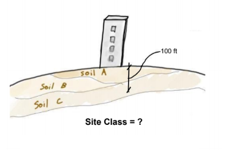
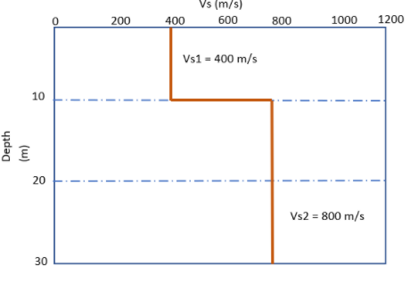

Lecture 3: Site Conditions
ASCE 7 - Site Class, Ss, S1

Where do we start when trying to determine the design acceleration on a building structure? To begin, we need a location on Earth. One specifically in California tells us a lot about our seismic demand because as we've discussed, earthquakes are linked to geology and tectonic plates. So, how does location specifically correlate to seismic demand?
The location of a structure in relation to nearby faults is one obvious correlation. The closer a building is to an active fault, the larger the anticipated seismic demand. This makes some intuitive sense. For example, if I'm living right next to an active fault, and my friend is 1,000 miles from the nearest active fault, it would make sense that I should expect to have greater potential to experience a large earthquake than my friend. But, what if the largest earthquake that the fault near me can produce is a magnitude 3.0? And the fault closest to my friend can create a magnitude 9.0?? Then, who should expect the bigger earthquake?
Clearly, both distance to a fault and the maximum magnitude of the fault are necessary info. Rest assured, geologists are both able to estimate the maximum magnitude of a fault, and scale the effective magnitude experienced from a distance away from the earthquake origin. So ultimately, where a building is located in relation to nearby seismic hazards will affect the anticipated seismic acceleration.
The other factor is what's underneath the building. I'm talking about the natural ground supporting the building. Different ground/soil types will alter the impact of seismic waves on the building structure. Remember that seismic waves travel through the ground from the earthquake origin, so the underlying soil is really acting as the conduit between the seismic wave energy and the building shaking.
Let's summarize these many factors into two specific ingredients: Seismic Hazard (base acceleration values), and Site Condition (acceleration adjustment factors).
The seismic hazard is typically provided through an online website application that references a United States Geological Survey (USGS) map. A lot of work goes into the map because it has to provide the expected max acceleration values for all locations in California. These max acceleration values have been scaled for a specific probability of exceedance over a given time period. It's worth noting that when we are given the legal code acceleration values, they are not the maximum possible accelerations that could ever occur in that location. Instead, the accelerations are scaled to represent what we, as humans, have decided is an appropriate level of risk.
So what exactly are the outputs from this USGS map/seismic hazard? The answers are S1 and Ss. These represent the maximum accelerations corresponding to a period of 1-second
and a short period
, respectively for reference/typical site conditions. Their units are expressed as a percentage of Earth's gravity. So if S1 = 0.4g, then the acceleration would be 0.4 x gravity. Makes sense, right? But why do we need two values anyways? Well, the reason behind that is linked to the seismic design response spectrum (the graph that was covered in the previous section). To create a simplified spectrum, we use two values as a basis, and then apply some rules to fill out the rest of the plot.
How do we get S1 and Ss on the Seismic Exam? You don't. It will be given to you. So don't worry about trying to practice reading maps or going on the typical websites (since you won't have internet access on the exam anyways). Just be aware that S1and Ss accelerations have been mapped out by a bunch of smart seismic engineers and geologists for our use.
Now to the other half of the equation, our site condition. Let's refer to the type of soil we have as a site class
since this is the standard nomenclature in ASCE 7. The site class is a way to describe the ground on which a building stands, and we set up our descriptions based on the way the ground filters out or attenuates seismic waves.
Really hard ground (stiff) surfaces tend to transmit high frequency waves easily, but filter out the low frequency ones. Conversely, really soft clayey soils can easily transmit lower frequency waves, but not those at a higher frequency. We know from previous sections that the period (or frequency) of waves matter because buildings also have their own periods, which are affected more by waves of a similar period. So by classifying the type of soil underneath our structure, we can better predict the intensity of seismic waves that will eventually impact our structure!
So where does ASCE 7 come in? Table 20.3-1 of ASCE 7 lists the different site classes and how you can identify them. The different site classes are categorized by average shear velocity, blows per foot, and shear strength. With some information, you can use this table to determine the site class. With that, we can then use ASCE 7 Tables 11.4-1 and 11.4-2 to determine the site coefficients, Fa and Fv. These coefficients are used to adjust or transform Ss and S1, seen in equations 11.4-1 and 11.4-2, into site-specific accelerations, SMS and SM1, based on the actual site conditions. In other words, the distinction is that we can safely say SMS represents the specific acceleration for a site, hence the name site-specific
acceleration, whereas Ss is lacking the correlation with site-specific soil conditions because it is based on reference soil conditions.
SMS and SM1 are the site-specific acceleration values, representing a level of hazard beyond what we typically design for. These accelerations correspond to a maximum considered earthquake ground motion
(MCER). So what exactly is being considered, or not considered? The answer relates to probability. We consider ground shaking effects from earthquakes in the design up to a maximum intensity, and don't consider any effects larger than that cutoff. This specific max point is denoted as MCER.
Example: Have you ever heard a weather report say that there's going to be a hundred year storm
? Let's imagine a scenario with a shopkeeper in a town that's about to experience a hundred year storm
. The shopkeeper is worried because if the rainfall exceeds 6" during the storm, his shop will flood. To his dismay, the television weather reporter predicts that this storm could produce 8" of rain! So the shopkeeper frantically calls his snarky hydrologist friend to find his chances of survival:
Quick, what are the odds my store is gonna flood?? What are the chances that the max rainfall will be 6"??
The odds of 6" of rainfall during the storm is 1%.
1%? That's it? What a relief! My store will start flooding with 6" of rainfall.
Oh, then your store has a 90% chance of flooding.
Why?? You said there was only a 1% chance of 6"??
Yes, a 1% chance that the exact rainfall will be 6", but a 90% chance it will be 6" or greater.
In this example, the shopkeeper didn't need to know the odds of an exact
amount of rainfall, he needed to know the odds of at least
a certain amount. The maximum considered earthquake ground motion has the same basis in probability. It represents an acceleration that has a certain probability of being exceeded in a given time duration.
So how do we decide on the probability of this maximum considered earthquake ground motion
(MCER)? Should it be the ground shaking effects from an earthquake that we think will hit every 50 years? Or 100 years? The answer is - think backwards! Instead of trying to pick an earthquake with a specific return period or probability of exceedance, we set our criteria for the structures themselves. Engineering society has decided that it is reasonable to build most structures, so there is no more than a 1% chance of collapsing in a 50 year period. The criteria for earthquake shaking is defined by the driving force behind all of structural engineering: to provide reasonable building safety. To create this probability, there are two methods used in the determination of ground level shaking, namely, deterministic method and probabilistic method.
Deterministic vs. Probabilistic Method
Deterministic and probabilistic methods each have certain advantages and disadvantages when it comes to predicting earthquake ground motions. In the deterministic approach, we specifically look at the earthquake’s magnitude and location in contrast to the probabilistic approach where all possibilities of damaging earthquake events and magnitudes are considered. The deterministic method only considers earthquake events that have occurred, while probabilistic approach is a probability-based method, hence the name, to model uncertainties in the location, size, and shaking intensity of future potential earthquakes. This method uses probability to predict the rate of exceedance for different ground motions for a specific time period, which is used in design to determine the allowable risk level for building safety. Information on these categories are gathered and analyzed to determine the probabilities for ground motion exceedance at a specific site, and then compiled into a distribution plot of a range of ground motions and these probabilities. Computations for this method can get lengthy and complex, but don’t worry, there are computer programs specifically designed for this.
Now you might wonder, why not just go with the deterministic approach since we can consider the worst-case scenario, or the largest ground motion? This is not necessarily true because there may be a larger ground motion that can occur, but haven’t been recorded yet. The probabilistic method provides for the consideration of different possible ground motions and their associated rates of exceedance to be correlated with an acceptable level of risk for design. So you might wonder, how can we determine which ground motions to use for design?
Since ground motions vary depending on the location, it is not always cost-effective to use very large ground shaking intensities. For example, in California, the MCER is capped deterministically at the 84th percentile. In the event that the shaking effects of the MCER are experienced, there is a chance of up to 10% that there will be partial or whole building collapse for a wide range of structures, even at the deterministic cap of the 84th percentile. Depending on the risk categorization of buildings and structures, the structural systems will be damaged and unsuitable for occupancy. The time period associated with this demand is over the course of 50 years. So to clarify, it is NOT the 50 year earthquake, nor the 100 year earthquake, it is a probabilistic seismic hazard that can be legally used in the design of building structures.
If this seems like a lot of information all at once, that’s ok because the Seismic Exam is not going to test your knowledge of earthquake modeling. If you’d like to learn more, you can watch some helpful videos on seismic hazard analysis here.
Moving forward, we understand that SMS and SM1 represent the MCER which is a spectrum based on a specific probability of exceedance. But, we don’t design for the MCER because it is simply too large of an acceleration. Instead, we take the MCER and multiply it by ⅔. See Section 11.4.5, equations 11.4-3 and 11.4-4 (ASCE 7). This is how we get SDS and SD1, which are the real design acceleration values that construct our design response spectrum. The keyword here is design. The seismic exam will likely test your understanding of the design earthquake ground motion vs the maximum considered earthquake ground motion. Just remember that we design for ⅔ of the MCER.

Where does the ⅔ come from? The reasoning behind this ⅔ factor comes from a variety of different factors, including inherent material overstrength, redundancies, and an alignment with historical design forces that used a different equation. Remember, the goal is to provide a reasonable level of safety across a broad variety of structures. If we can accomplish that goal, then the method is just a means to an end. As it just so happens, the design forces resulting from the ⅔ factor (and combined with all the other design parameters) have done just fine at safeguarding life, so it isn't something that's likely to change anytime soon. If anything, proper detailing and material-specific designs are more commonly updated when earthquakes occur and research can be done on performance.
Sample Question
Question: Determine the design response acceleration for a retail building on Site Class C. Ss = 0.5, S1 = 0.3.
Reference: ASCE 7 Chapter 11
Since SDS and SD1 will be given during the Seismic Exam, we can determine the acceleration parameters. For this problem, site class is provided so we can proceed to refer to ASCE 7 Tables 11.4-1 and 11.4-2 to determine Fa and Fv.
Fa per ASCE 7 Table 11.4-1 = 1.3 for Ss = 0.5
Fv per ASCE 7 Table 11.4-2 = 1.5 for S1 = 0.3
Note that Fa was interpolated between the two listed Ss values. Now, use eqn 11.4-1 and 11.4-2, to determine the site coefficients for MCER.
SMS = FaSs = (1.3) x (0.5) = 0.65
SM1 = FvS1 = (1.5) x (0.3) = 0.45
Using ASCE 7 eqn 11.4-3 and 11.4-4, we can determine design accelerations: SDS and SD1.
SDS = (⅔)(SMS) = (⅔) x (0.65) = 0.43g
SD1 = (⅔)(SM1) = (⅔) x (0.45) = 0.3g
Sample Question
Question: Determine the design response acceleration for a hospital on Site Class E. Ss = 1.758, S1= 0.864.
Reference: ASCE 7 Chapter 11
Fa per ASCE 7 Table 11.4-1 for Ss ≥ 1.5
Fv per ASCE 7 Table 11.4-2 for S1 ≥ 0.6
Since the Site Class is E per ASCE 7 Tables 11.4-1 & 11.4-2, we need to see section 11.4.8 - Site Specific Ground Motion Procedures.
Site-Specific Ground Motion Procedures
For areas with more dangers, it is intuitively understandable to have more precautions of safety measures in place. The same goes for sites with high seismicity, where a more complex analysis is required to determine the acceleration parameters used for design. Site-Specific Ground Motion Procedures (SSGMP) is always required for the following sites: 1) Sites with S1 ≥ 0.6 that have structures with damping systems and seismically isolated structural systems, 2) Site Class E sites with Ss ≥ 1.0, and 3) Site Class D sites with S1 ≥ 0.2.
For the Seismic Exam, it is important to remember that there are three exceptions to this rule. The first two exceptions involves sites classified as Site Class E: 1) For sites with the site coefficient Fa is to be equal to that of Site Class C and, 2) For sites with the acceleration parameter S1 ≥ 0.2, the fundamental period of the structure T > Ts (ratio SD1/SDS), and the design procedure used has to be the Equivalent Static Force Procedure. The third exception involves sites classified as Site Class D: 3) For sites with the seismic acceleration parameter for the 1-second period, S1 ≥ 0.2 and the seismic response coefficient Cs has to be computed using the equation 12.8-2 when T ≤ 1.5Ts and be equal to 1.5x the value of Cs from equation 12.8-3 for TL≥ T > 1.5Ts or equation 12.8-4 for T>TL.
Discussion Questions
Question: Can you determine the site class using only one of the parameters given in Table 20.3-1 (vs, N, su)?
Answer: While there are multiple parameters for the site class, we only need one that fulfills the requirements of ASCE 7 section 20.4. We even see language in Section 20.3.2 that states you should classify site class by one of the three parameters, indicating that not all are required.
Question: What site class should I select if I have two site class parameters that fall into different site class categories? For example, what if the average shear wave velocity suggests Site Class C, but the undrained shear strength suggests Site Class D?
Answer: The safe bet is to choose the more conservative site class that applies. For any question on the Seismic Exam that requires a judgement call, it’s probably best to pick the worst case. So, for the example above we would select Site Class D.
Question: Can you determine the site class without any of the site class parameters (vs, N, su)?
Answer: When not given soil data, we can default to a moderately conservative site class. Section 20.1 states that it is appropriate to use Site Class D if information isn’t available. This is under the assumption that there’s no mention of soft clay or other soils vulnerable to failure or collapse. If a question on the Seismic Exam mentions anything to do with clay, that’s the signal to read sections 20.3.1 or 20.3.2 to see if Site Class E or F applies.
Note: Fa values have been updated in the 2016 version of ASCE 7. One key change from the previous edition is that some values are larger for Site Class C. Without any information on the soil type, it is more conservative to take the Fa values for Site Class C! This has some nuance, and it is not likely to be directly tested on the Seismic Exam.
Practice Questions
1) What values represent the 5% damped design spectral response acceleration parameters at the short period and the 1-second period?
Answer: SDS and SD1 are the design spectral response acceleration parameters at the short period and the 1-second period, respectively.
2) What is the average shear wave velocity of the soil for the following Vs profile? Vs1 = 400 m/s and Vs2 = 800 m/s?
Procedure: First, find the total depth: 10m+20m=30m. Next, divide each depth by the corresponding shear velocity: 10m/400m/s and 20m/800m/s. Then, add these two values: (10/400)+(20/800) = 0.05. Finally, divide the total depth by the previous value of 0.05 to find the average shear strength: 30/0.05 = 600 m/s. Therefore, the average shear wave velocity is 600 m/s.
3) Is Site Class F the appropriate site class for clays with high plasticity [H > 25 ft and PI > 75] in a soil profile that would typically be classified as Site Class D or E, and fulfillment of the following conditions?
- 1) Site coefficients Fa and Fv are obtained from Tables 11.4-1 and 11.4-2 for Site Class D or E and multiplied by a linear factor.
- 2) Design acceleration parameters SDS and SD1 obtained using the scaled factors Fa and Fv are not greater than the upper bound values for Seismic Design Category B in Tables 11.6-1 and 11.6-2.
Answer: According to ASCE 7 Section 20.3.1-3, Site Class F is still the appropriate classification; however, a site response analysis is not required if and only if both requirements for this exception from 20.3.1 are satisfied.
4) How is a site class determined for highly sensitive clays that have structures with fundamental periods T ≤ 0.5 s?
Answer: According to ASCE 7 Section 20.3.1-1, the site does not require a site response analysis if the above requirement is satisfied, which means that it can be classified using Table 20.3-1. In addition, the site coefficients, Fa and Fv, can be determined using Tables 11.4-1 and 11.4-2.
Additional Links
If you’re interested in learning a little bit more about the background of some of the things mentioned above or more reading materials, check out these links: